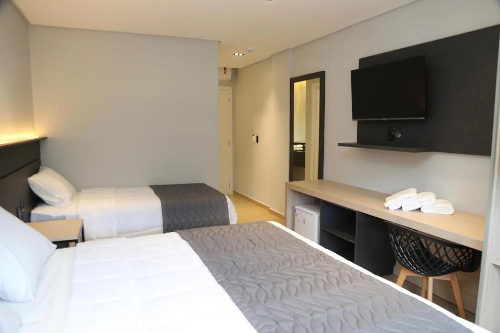
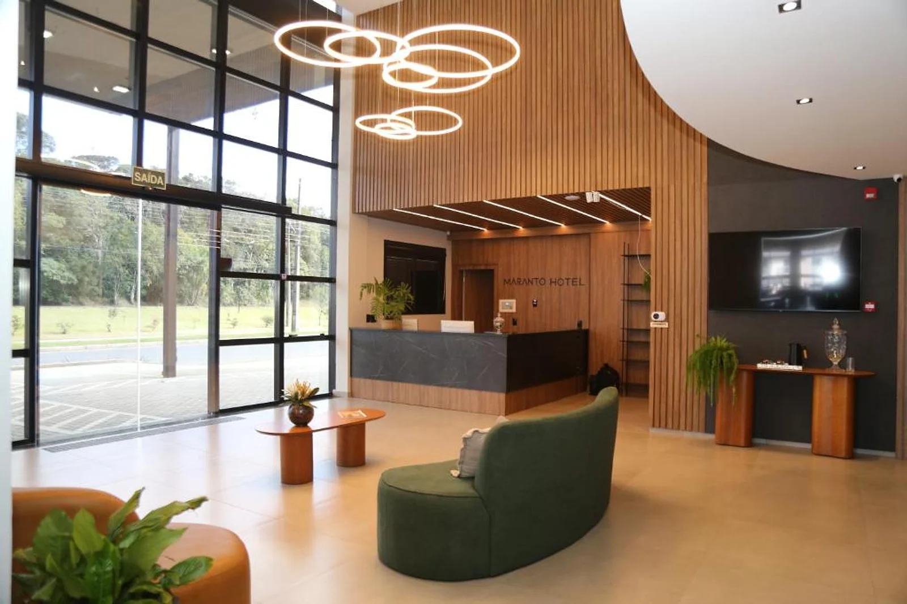
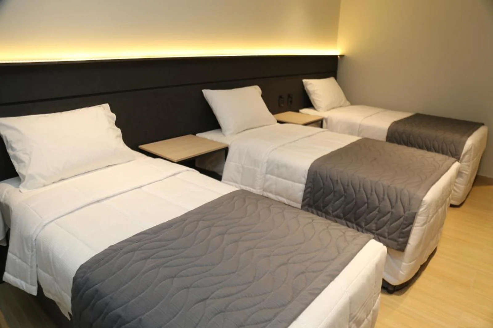
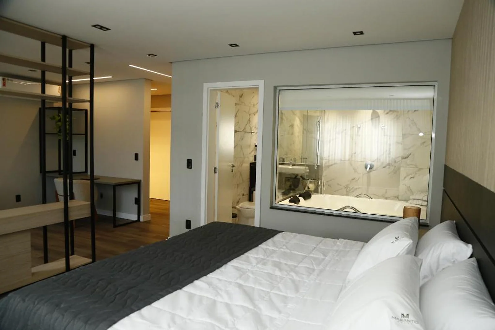
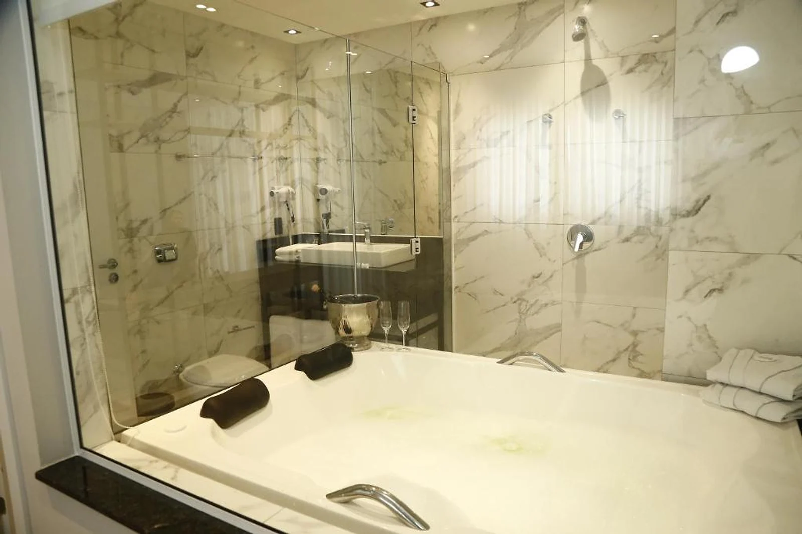
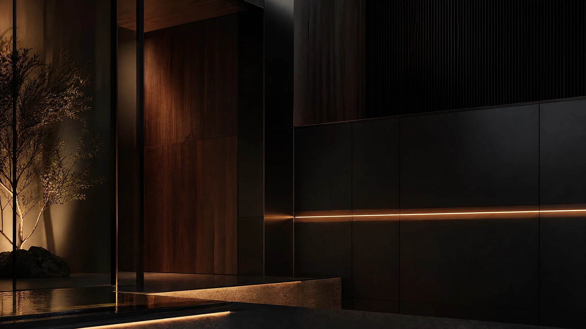

01Duplo Standard
Uma pausa bem resolvida para quem viaja a dois ou chega a trabalho.
Ver disponibilidade ↗Porto União · Santa Catarina
Uma hospedagem prática, confortável e bem localizada para quem chega a trabalho, a passeio ou só precisa desacelerar.
Uma hospedagem que cuida do essencial.
Uma pausa bem recebida
O Maranto une praticidade e acolhimento em Porto União. A recepção funciona 24 horas e os ambientes foram pensados para uma permanência leve, sem excessos e com o essencial bem resolvido.
Encontrar o Maranto ↘
Acomodações
Acolhimento, conforto prático e espaço para organizar o próximo dia.

01Uma pausa bem resolvida para quem viaja a dois ou chega a trabalho.
Ver disponibilidade ↗
02
03Mais espaço para desacelerar, com acabamento contemporâneo e hidromassagem.
Ver disponibilidade ↗O bom dia começa aqui
O café da manhã buffet é servido diariamente das 6h30 às 9h30. Um começo simples e generoso para quem ainda vai seguir viagem, trabalhar na região ou deixar o dia começar sem pressa.

Sua referência em Porto União
Avenida dos Ferroviários, 1849
Porto União — SC · CEP 89400-000
